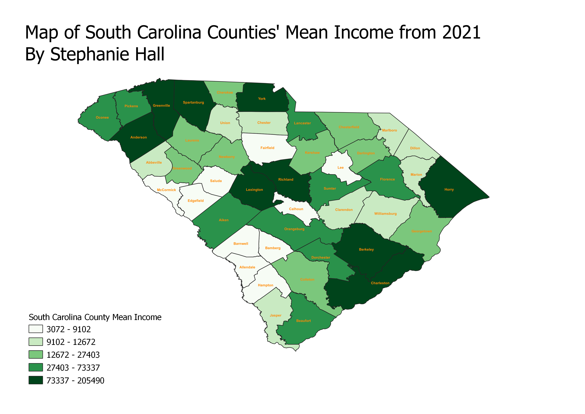

Homework 6: Census data choropleth
Stephanie Hall
This map displays households' mean income in dollars for each county in South Carolina, as represented in the 2021 American Community Survey data set. The darker green indicates counties with higher income households, and the lighter green indicates counties with lower income households.

Data used for this project
CSV dataset
Link to GeoJSON
Link to Census Data